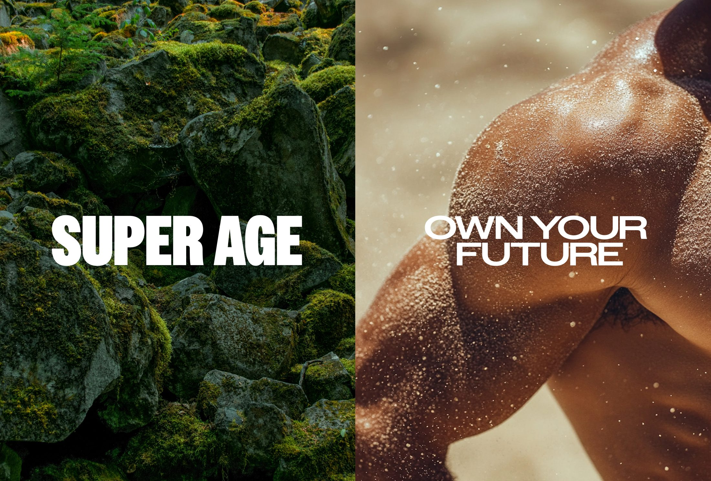
Wellness & Longevity Brand
Client work via Pardon.
Super Age
Super Age's publication, "The Mindset," redefines aging as a transformative journey,
celebrating the wisdom, strength, and vitality of aging.
We envisioned a world where aging is celebrated as a journey of renewal and vitality. Through
Super Age, we sought to reimagine the narrative around aging, drawing inspiration from Earth's
timeless wisdom and resilience. We developed a brand identity and launched "The Mindset"
publication to inspire and empower individuals on their journey through life's natural stages.
Since launch, Super Age has grown to 1M+ newsletter subscribers in under a
year, with a 54% open rate — well above industry benchmarks — and a
9.8% CTOR. The brand has expanded from a digital publication into
in-person experiences, including longevity-focused Immersions, live conversations with
the Super Age Scientific Advisory Board, and the Super Age Games, the first in-person
longevity competition of its kind.
Initial concepts for the brand
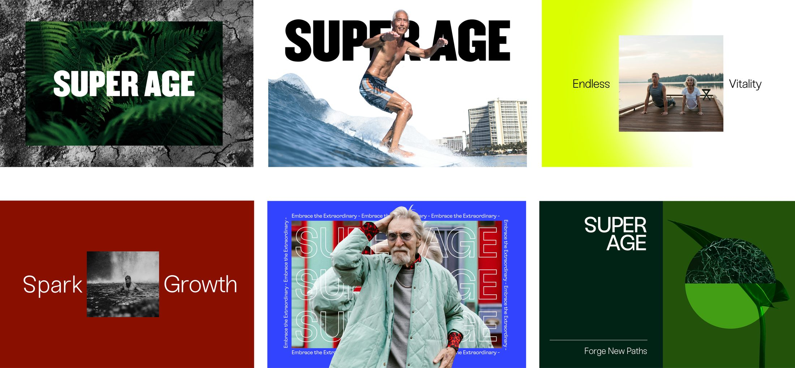
Initial type personalities
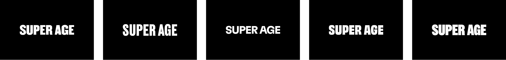
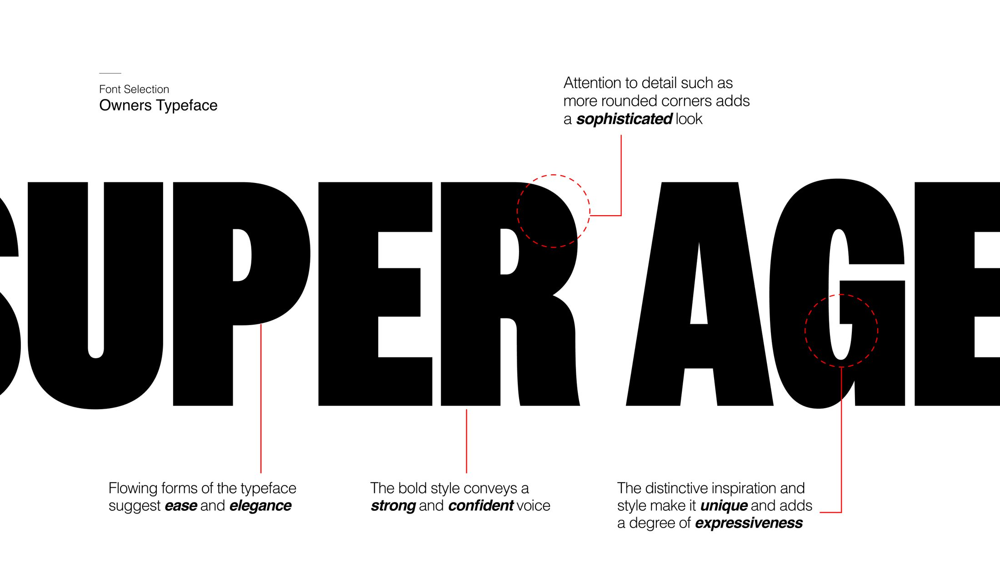
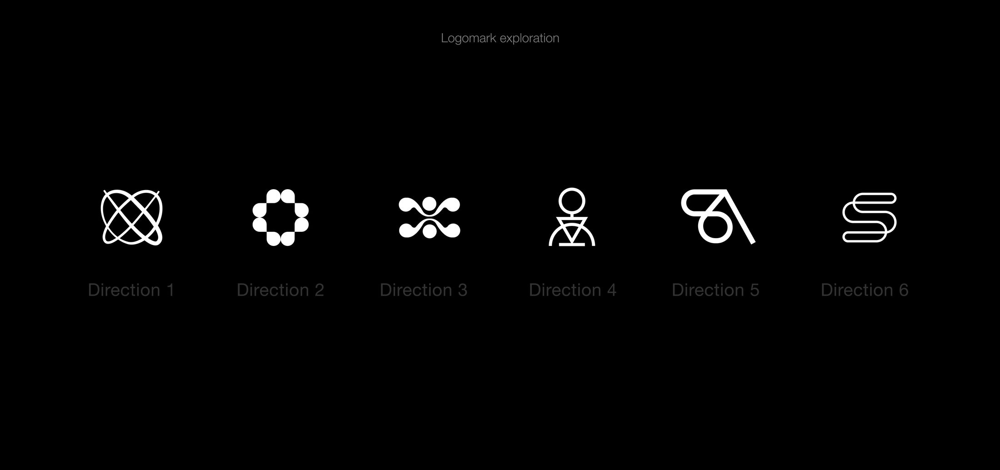
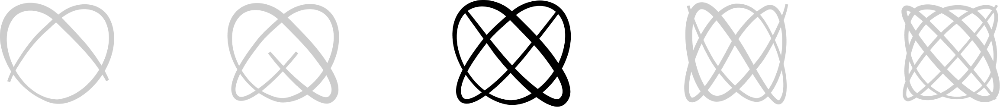
Logomark
This symbol captures this timeless rhythm, reminding us that each moment is part of a much larger cycle. "Super Age" is one of these fleeting yet transformative phases — a stage of life where renewal, growth, and vitality intersect. Just like the Lissajous curve, we are shaped by time's flow, always in motion, always part of the greater ceaseless journey of life.
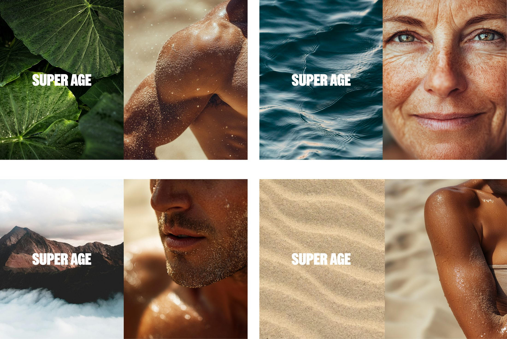
The color and photography of the brand embraces the deep relationship between humans and nature, drawing inspiration from four natural ecosystems: forests, peaks, deserts, and reefs.
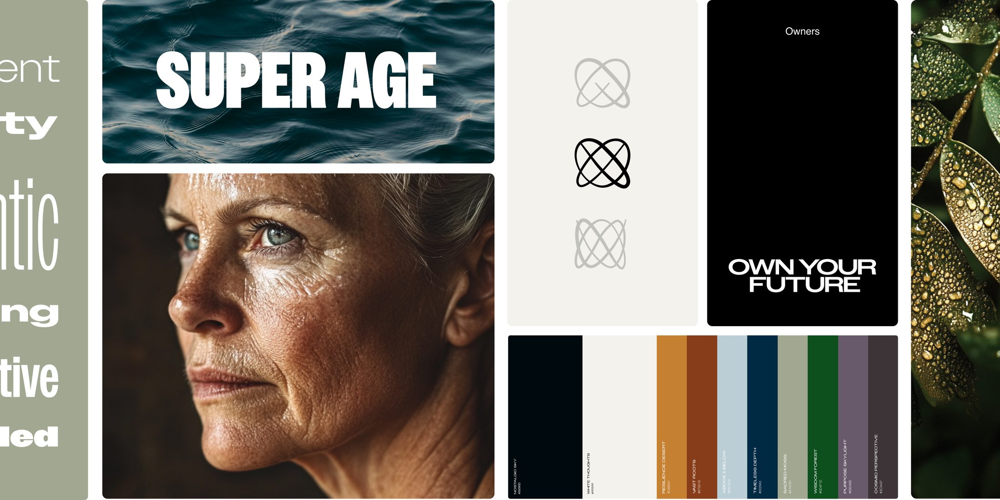
Brand vibe
Website Expression

Instagram Posts

Ads for the Super Age Games
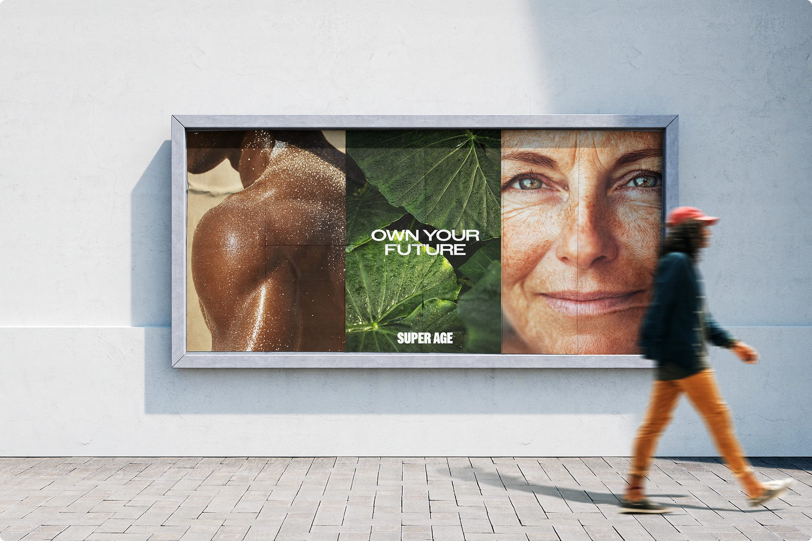
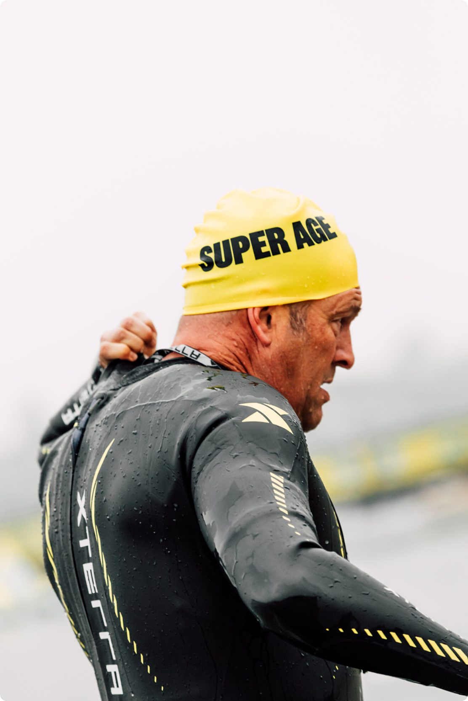
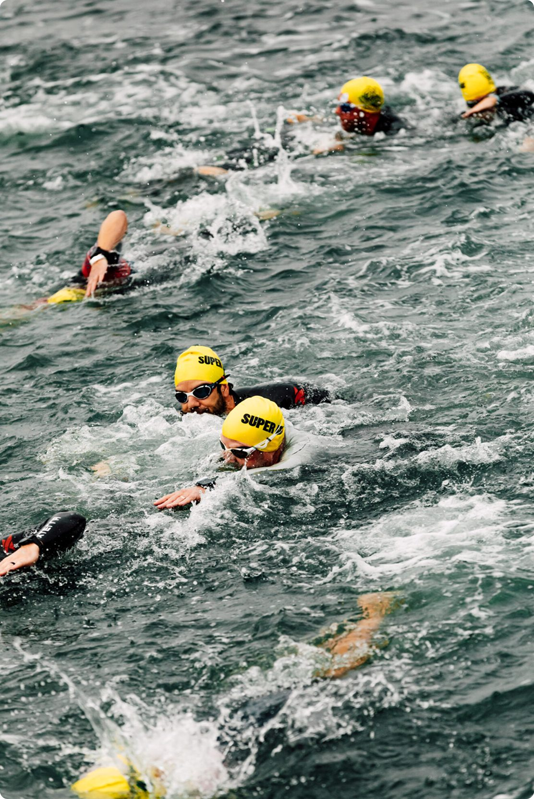
Super Age live events